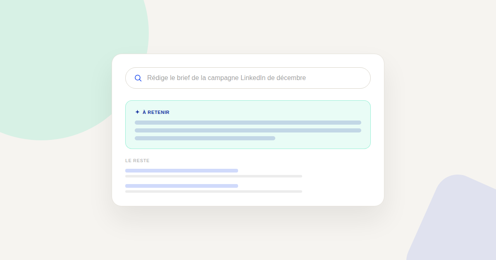
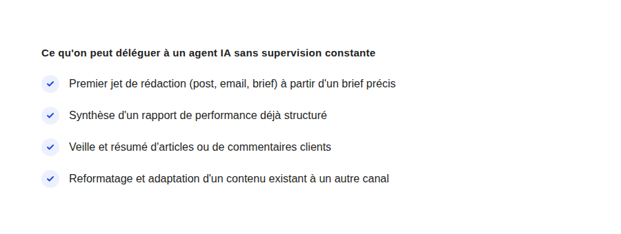

Agents IA marketing : ce qu'on peut vraiment leur confier en 2026 (et ce qu'il ne faut jamais leur laisser faire)
« On pourrait remplacer ce poste par un agent IA ? » — la question m'est posée dans presque chaque mission depuis le début de l'année. La réponse honnête : certaines tâches, oui, sans hésiter. D'autres, pas encore, et le confondre coûte cher en image de marque ou en décisions mal informées.

Depuis que les agents IA (des assistants capables d'enchaîner plusieurs actions et outils sans intervention à chaque étape) sont sortis des démonstrations pour arriver dans de vrais flux de travail marketing, la question n'est plus « est-ce que l'IA peut le faire ? » — la réponse est presque toujours oui pour une première tentative. La vraie question est : peut-on lui confier la tâche sans relecture systématique, et que se passe-t-il si elle se trompe ?
La grille qui fonctionne : réversible vs engageant
Dans les audits que je mène, la distinction la plus utile n'oppose pas les tâches « créatives » aux tâches « répétitives » — un agent IA peut très bien générer un premier jet créatif correct, et se tromper sur une tâche répétitive si le contexte manque. La distinction qui compte est celle-ci : une erreur sur cette tâche est-elle visible et corrigible avant qu'elle ne parte, ou est-elle engageante et difficile à rattraper une fois publiée ?
Ce qui se délègue déjà bien
- Le premier jet, jamais la version finale. Un brouillon de post, d'email ou de script publicitaire, à partir d'un brief précis (audience, objectif, ton, contraintes) — à condition qu'un humain le relise avant diffusion.
- La synthèse de données déjà propres. Résumer un export GA4 ou un rapport Google Ads déjà structuré en langage naturel fait gagner un temps réel, sans risque si la donnée source est fiable.
- La veille à volume. Lire 200 commentaires clients ou 50 articles concurrents et en extraire les tendances récurrentes — une tâche qu'aucun humain ne fait avec plaisir ni exhaustivité.
- L'adaptation multi-format d'un contenu déjà validé. Transformer un article de blog validé en fil LinkedIn, en script vidéo court, en newsletter — le fond a déjà été validé, seule la forme change.
Ce qu'il ne faut pas encore lui laisser faire seul
- Répondre directement à un client mécontent. Un agent IA peut préparer une réponse, mais l'envoi automatique sans relecture sur un sujet sensible reste un pari risqué — le ton peut sonner juste sur le papier et mal passer dans le contexte réel de la relation client.
- Décider seul d'un budget publicitaire. Ajuster un budget en fonction d'une tendance de trois jours peut sur-réagir à du bruit statistique plutôt qu'à un vrai signal — la supervision humaine reste nécessaire sur les décisions financières engageantes.
- Publier sans vérification factuelle sur un sujet réglementé. Santé, finance, droit : une IA générative peut affirmer une chose fausse avec la même assurance qu'une chose vraie. Sur ces secteurs, chaque affirmation factuelle doit être vérifiée avant publication.
- Gérer une crise de réputation. Le contexte émotionnel et les enjeux d'image d'une crise dépassent ce qu'un agent IA peut évaluer correctement sans supervision humaine directe et continue.

Comment démarrer sans tout casser
La méthode qui fonctionne le mieux avec mes clients n'est pas de choisir une liste de tâches à déléguer d'un coup, mais de commencer par une seule tâche à faible risque, mesurer le temps gagné et la qualité du résultat pendant deux à trois semaines, puis élargir progressivement. C'est plus lent au départ, mais ça évite l'aller-retour classique : tout déléguer d'un coup, se faire piéger par une erreur visible, et revenir en arrière sur tout — y compris ce qui fonctionnait très bien.
Le vrai gain n'est pas le remplacement, c'est le débit
Dans la quasi-totalité des cas que j'observe, l'agent IA ne remplace pas un poste : il change le volume de ce qu'une même personne peut produire ou vérifier dans une journée. Une personne qui validait trois briefs publicitaires par semaine peut désormais en superviser dix, parce que l'agent prépare le premier jet. C'est un gain de débit, pas une suppression de la supervision humaine — et c'est cette nuance qui différencie une adoption qui tient dans la durée d'un pari qui explose au premier incident.
FAQ
Un agent IA peut-il gérer entièrement les réseaux sociaux d'une marque ?
Il peut préparer les brouillons et proposer un calendrier, mais la publication finale et la gestion des interactions sensibles (plaintes, bad buzz) doivent rester supervisées par une personne, au moins pour l'instant.
Combien de temps avant de pouvoir déléguer une tâche sans relecture ?
Il n'y a pas de délai universel : cela dépend du niveau de risque de la tâche et de la qualité du contexte fourni à l'agent. Compter au minimum plusieurs semaines de supervision rapprochée avant de réduire la relecture, et jamais sur les tâches engageantes ou réglementées.
Faut-il un outil spécifique pour mettre en place un agent IA marketing ?
Cela dépend de la tâche : un assistant conversationnel avec accès aux bons outils (via des connecteurs MCP par exemple) suffit pour la plupart des cas d'usage listés ici, sans développement sur mesure.
Envie de savoir où en est votre équipe sur la délégation à l'IA ?
Pour aller plus loin, voir le Kit MCP Marketing, la page MCP pour le marketing, et la page Comment je travaille.
Pour continuer sur ce sujet.